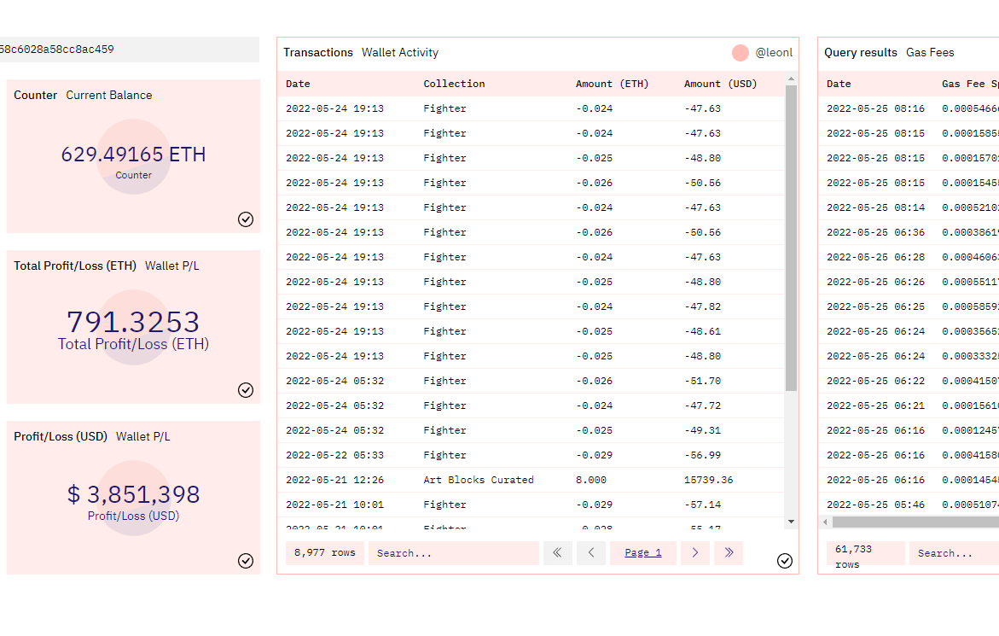

Cryptocurrency and NFT Analysis using SQL
Introduction
This is actually different projects jumbled into one page. All of the projects leverage the wonderful features of Dune Analytics.
Dune is essentially a platform that gives the user access to near endless amounts of blockchain data which you can then query using SQL. An extra handy feature is that users can create visualizations and dashboards directly using the SQL code. Like other communities, the website is completely free and open source, really driving home the emphasis on collaboration and building off of other members in the community to constantly improve.
Example
Take this example: you've taken interest in NFTs recently and for lack of a better example, you like Unamused Monkies (yes, it's a joke, I mean Bored Apes), and you want to buy in, but you want more in-depth metrics as to how it's been performing. You want to check something as simple as how the floor price of the collection has been holding up. You'd think it'd be easy, but for whatever reason, Opensea doesn't provide it. They only tell you the volume and the daily average price of the NFTs sold. And this is where Dune comes in:
SELECT
DATE_TRUNC('day', block_time) AS Day,
SUM(original_amount) AS Volume,
PERCENTILE_CONT(0.1) WITHIN GROUP (ORDER BY original_amount) AS Floor
FROM nft.trades
WHERE
nft.trades."original_currency" in ('ETH', 'WETH')
AND "number_of_items" = 1
AND "original_amount" > 0.01
AND "platform" = 'OpenSea'
AND nft_contract_address = CONCAT('\x', SUBSTRING('{{Project Contract Address}}', 3))::bytea
GROUP BY 1
ORDER BY 1 DESCThe {{Project Contract Address}} field in the code above is there to tell Dune that this is a parameter for the user to input. So this generic code to show daily floor price works for any NFT project of the user's choice.
Projects
I've worked on several projects, such as an Ethereum cryptocurrency wallet tracker and an analytics comparison between two similar NFT projects.
Shown on the right is the Ethereum cryptocurrency wallet tracker. I originally made this as a means of convenience. For anyone has had the pleasure using a crypto wallet such as Metamask, they would quickly discover that it is extremely annoying to keep track of your transactions. You'd either have to scroll through Metamask clicking into each transaction one by one or use Etherscan, neither of which is very user friendly. This wallet tracker shows your balance, profit/loss, as well as transactions and all the gas fees that the wallet has incurred.
All projects, including the SQL code, can be found directly on Dune Analytics page: https://www.dune.com/leonl